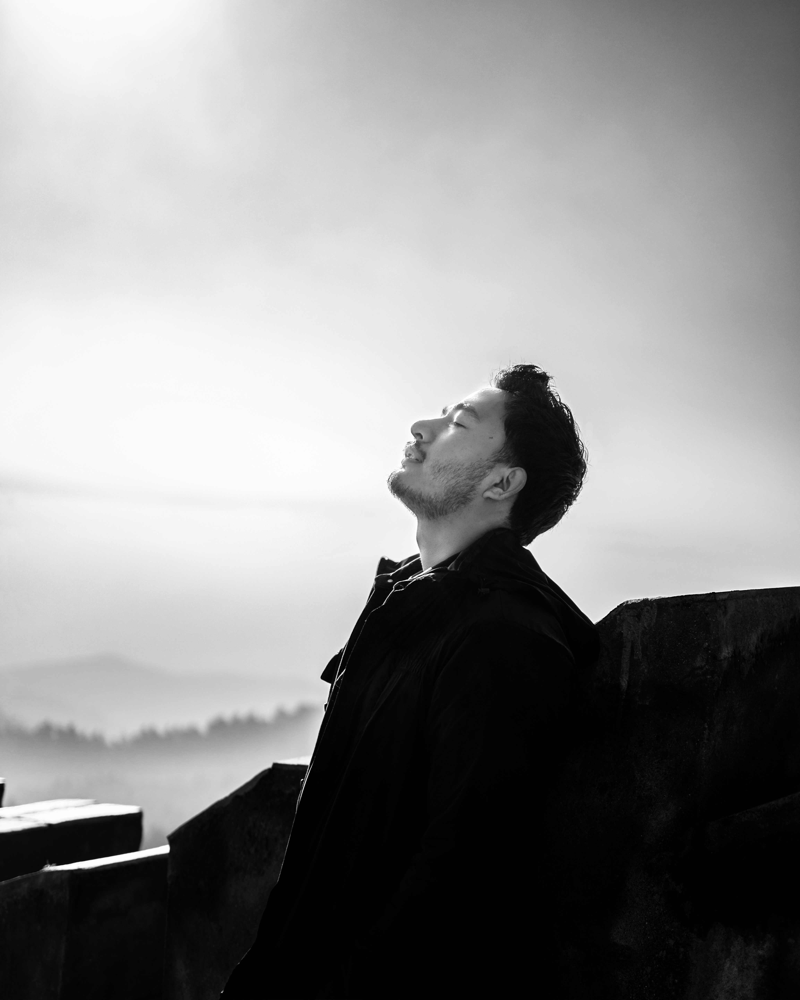

ANJALSATYAL
A Little Obsession In Every Detail
Play showreel →01 / Showreel
One stage for motion, pacing, sound and finish.
02 / Selected Work
Five scenes from the production timeline.
Real work from the current portfolio, reframed as an editorial sequence. Scroll through the details; the frame changes with the story.
that connect 01
Storytelling 02
for the feed 03
campaign 04
Graphics 05
03 / More featured work
More featured work
Work archive
Full archive
The broader body of edits, motion pieces, social content, graphic design and brand campaigns, organized for quick scanning.
Open archive ↗04 / Services
Video
Production
Concept → Pre-production → Production → Editing → Color → Sound → Delivery
Motion Graphics
Typography → Animation → Explainers → Campaign Motion
Visual Design
Social → Campaign → Print → Digital
Branding
Identity → Visual Systems → Campaign Direction

05 / About
Built from curiosity,Refined by the experience.
I started editing my own photos in class 8 because I was curious about how images could be changed and shaped. In class 11, that curiosity moved into video editing.
Since 2020, that practice has grown into professional work across pre-production, production and post-production, with hands-on experience in editing, motion graphics, graphic design, photography, videography and visual storytelling.
I like building things where technical thinking and visual storytelling meet.
Training andleadershippractice.
Over 1.6 years of training and mentoring aspiring creatives through workshops and professional sessions at colleges and institutions, including THEMES & KMC, with focus areas including video editing, graphic design, photography and videography.
07 / FAQ
Questions before the first cut.
I started editing photos in class 8 and moved into video editing around class 11. My professional journey has developed since 2020 across production, editing and visual design.
I’ve worked on more than 778 videos and created over 250 graphics across social media, campaigns, branding, presentations and other digital content.
From ideation, scriptwriting, production, editing, motion graphics and design to creative strategy, I work across the full path from idea to delivery.
Yes. My experience covers concept development, planning, production and post, including editing, motion graphics, sound, color and final delivery.
Yes. I’m open to freelance projects, contract work, creative collaborations and longer-term opportunities where I can contribute to a production or creative team.